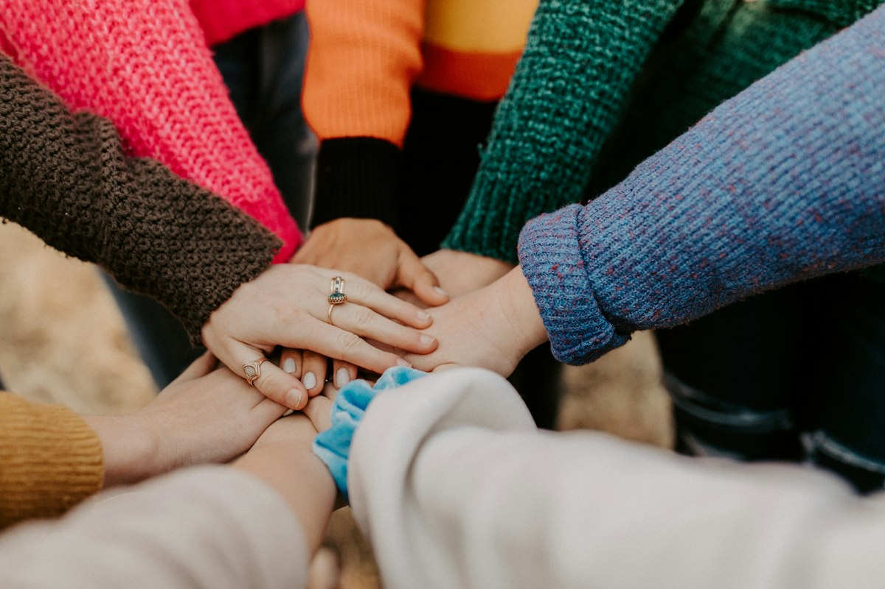

Comprehensive Focus Areas
Creating Impact Where It Matters Most
MeoCare bridges critical humanitarian needs and animal protection through verified, transparent, and community-driven initiatives. Discover our active focus areas below.
Verified Food Aid
Animal Rescue & Care
Community Mobilization
 Food Assistance
Food Assistance
 Animal Rescue
Animal Rescue
 Veterinary Care
Veterinary Care

Partnerships